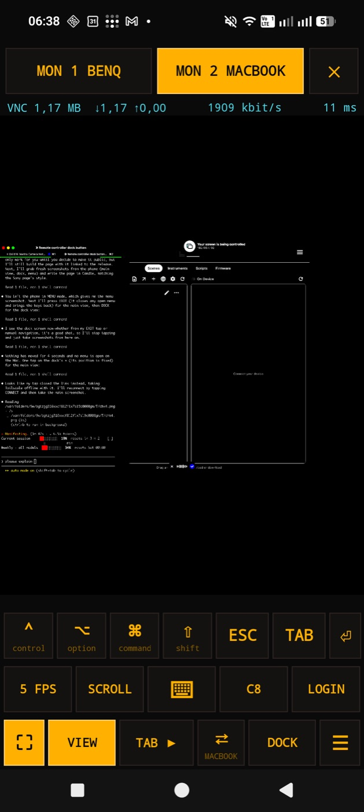
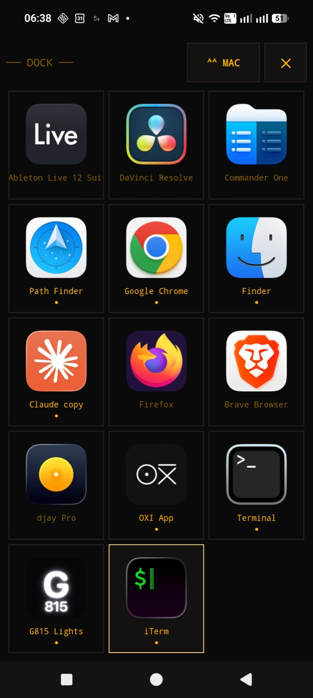
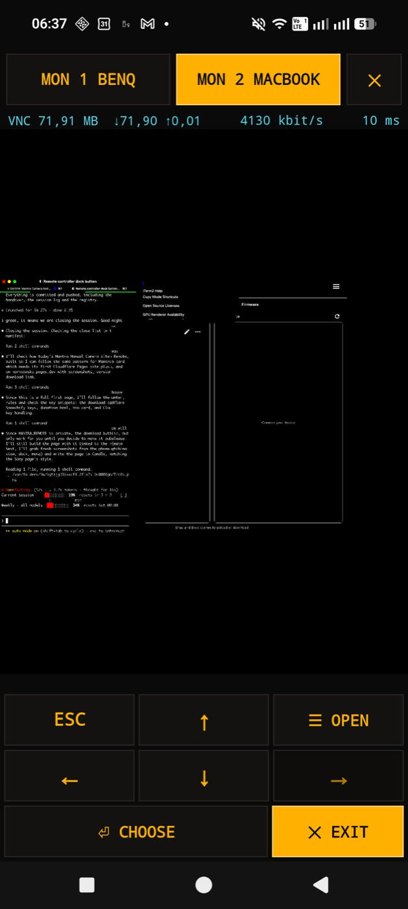

Help it grow
Put something in the bowl
Mantra Remote is free. Every gift goes into its next version: the dock, the menu bar, the keys that land without waiting.
Open the app and the Mac is there. No address to type, no login screen: it switches Tailscale on, finds the Mac on the home Wi-Fi or across the internet, and logs in. Close it and the tunnel closes with it.
Download the latest version


At home it talks over the Wi-Fi, straight to the Mac. Away, through Tailscale. It tries every way at once and takes the first that answers.
A small line above the keys shows what is travelling. It disappears the moment the Mac itself has the key: about 30 ms at home.
VIEW stops the mouse, so you can zoom and look around without a stray click. The keys still work.
Choose the frame rate and the colours, down to black and white: a sixth of the data on 4G. The meter counts every megabyte.
The Mac side is Apple's own Screen Sharing and Tailscale, and for DOCK, MENU and the landing line, the Dock Switcher (Mantra) on the Mac, allowed in Accessibility.
Mantra Remote is free. Every gift goes into its next version: the dock, the menu bar, the keys that land without waiting.